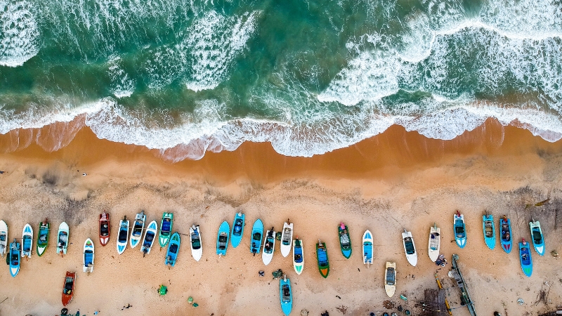
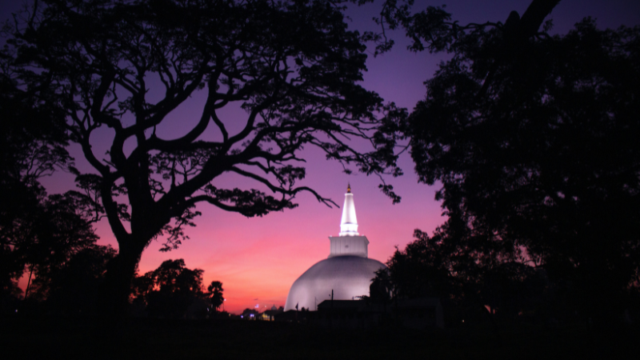
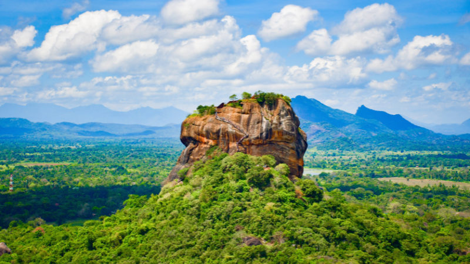
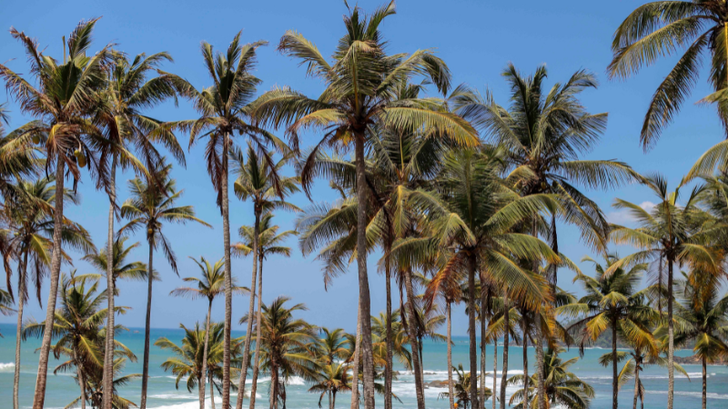

The Nine Arch Bridge is a prime example of Sri Lanka's engineering and architectural prowess. The train ride offers scenic views of the lush green hills and tea plantations.
Photo: Genine Alyssa Pedreno-Andrada

Sri Lankan people have a deep connection to the ocean and its marine life. Fishing is an important source of livelihood for many coastal communities.
Photo: Tomáš Malík

The architecture and design of the stupa represent Sri Lanka's unique blend of Buddhist and local cultural influences.
Photo: Chathura Anuradha Subasinghe
Perahara is a traditional procession that takes place in Sri Lanka, particularly in the city of Kandy. It is a significant cultural event that has been held annually for centuries and attracts both locals and tourists alike.
Photo: Sabina Juriansz

The ancient rock fortress of Sigiriya is a testament to Sri Lanka's rich cultural history and artistic achievements. The frescoes and carvings on the rock are an example of the country's vibrant artistic traditions.
Photo: Harsha Samaranayake

Coconut trees are a ubiquitous sight in Sri Lanka, and are an important part of the country's economy and culture. The coconut is used in a variety of ways, from cooking to construction, and the country exports coconut products to countries around the world.
Photo: Charith Kodagoda